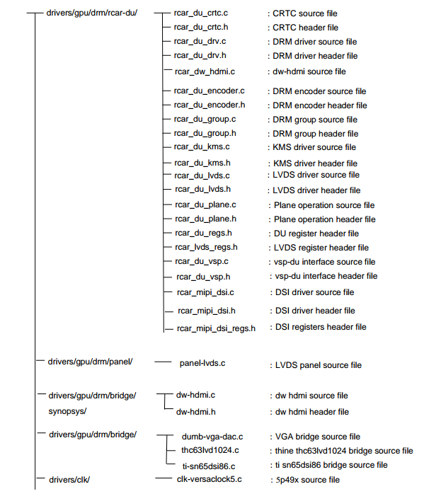
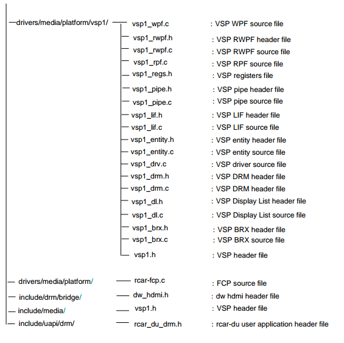
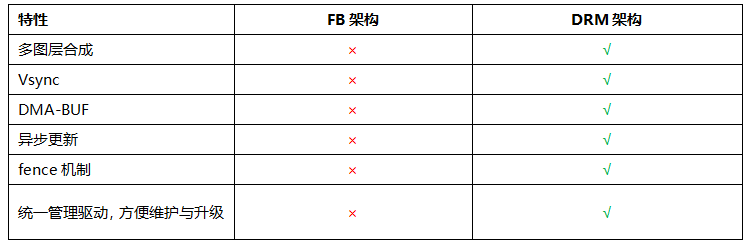
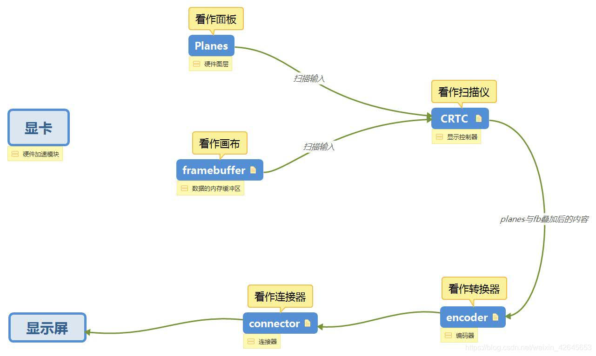
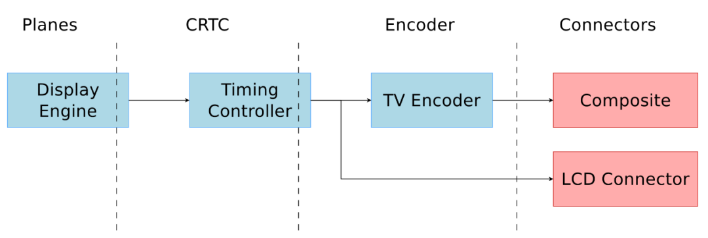
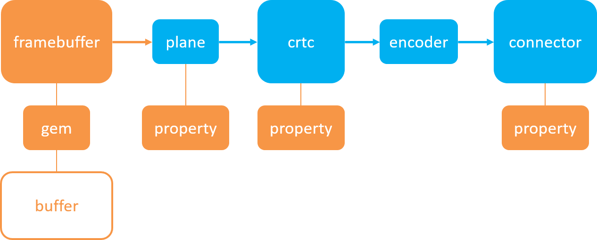
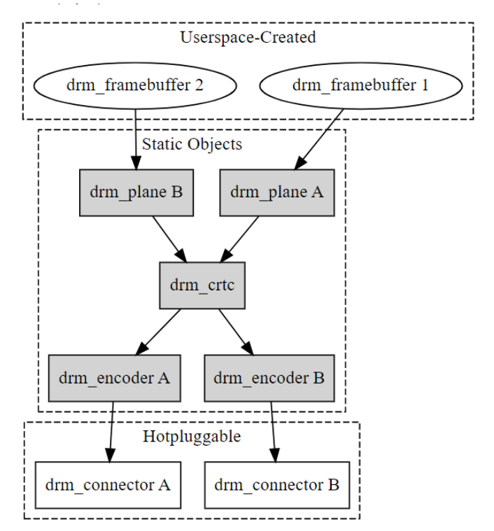

4.14.1. DRM框架
DRM主要分为KMS和Render两大部分,从功能上讲KMS负责搭建显示控制器的pipeline,并控制显示硬件将图像缓冲区scanout到屏幕上,而如何加速生成framebuffer中的内容则是 3D引擎(即Render)负责的事情.

DRM在源码中的分布


内核中的内容:
DRM驱动通用代码:包括GEM,KMS
用户态代码:
MESA: OpenGL state tracker, egl, gbm
libdrm:基本为内核提供的IOCTL的wrapper
drm与fb框架对比

4.14.1.1. GEM
GEM（Graphic Execution Manager）即图形执行管理器，在 DRM GPU 驱动框架中主要负责显示 buffer 的分配和释放，是 GPU 显存管理的关键部分 。在图形处理过程中，需要大量的内存来存储图形数据， 如帧缓冲区、纹理数据等，GEM 就像是一个高效的内存管家，负责合理分配和管理这些内存资源，确保图形任务能够顺利进行。它的存在使得用户空间应用程序可以更方便地管理显存，而不需要了解底层硬件 的复杂细节，大大降低了开发难度。不同机制解析如下：
dumb：dumb 是一种简单的内存分配机制，它只支持连续物理内存的 buffer 类型，基于 kernel 中通用 CMA（Contiguous Memory Allocator，连续内存分配器）API 实现，多用于小分辨率简单场景 。 在一些对图形性能要求不高、分辨率较低的场景中，如简单的嵌入式设备显示界面、基本的文本显示等，dumb 机制能够满足需求。它的优点是实现简单，直接使用 CPU 渲染即可，不需要复杂的 GPU 参与，成本较低。 但由于其只支持连续物理内存，在处理大内存或复杂图形场景时，会受到内存碎片化等问题的限制，无法满足需求。在一个简单的电子词典设备中，其显示界面主要是文本内容，分辨率较低，使用 dumb 机制来分配显示 buffer 就非常合适。
prime：prime 机制相对 dumb 更为强大，它既支持连续物理内存，也支持非连续物理内存，基于 DMA - BUF（Direct Memory Access - Buffer，直接内存访问缓冲区）机制实现，可以实现 buffer 共享，多用于大内存复杂场景 。 在现代图形应用中，如 3D 游戏、高清视频编辑等，需要处理大量的图形数据，这些数据往往需要占用大量的内存，且对内存的访问效率要求很高。prime 机制能够充分利用 DMA - BUF 机制，实现内存的高效分配和共享，满足大内存复杂场景的需求。 在运行 3D 游戏时，游戏中的各种模型、纹理、光照等数据都需要占用大量内存，prime 机制可以为这些数据分配合适的内存空间，并通过 buffer 共享技术，让不同的图形模块能够高效地访问这些数据，提高游戏的运行性能。
fence：fence 是一种 buffer 同步机制，基于内核 dma_fence 机制实现，主要用于防止显示内容出现异步问题 。在图形处理过程中，由于 GPU 的并行处理特性和不同硬件模块之间的异步操作，可能会出现显示内容不同步的情况， 如画面撕裂、抖帧等，影响用户体验。fence 机制通过在关键操作点设置同步信号，确保在显示内容更新时，所有相关的操作都已完成，从而避免异步问题的出现。在进行视频播放时，fence 可以保证视频的每一帧都能按照正确的顺序和时间显示在屏幕上， 不会出现画面错位或撕裂的现象，让视频播放更加流畅、稳定。
4.14.1.2. KMS
KMS全称是kernel mode setting,这里的mode是指显示控制器的mode.
其实KMS主要做了两件事: 更新画面 和 设置显示参数
更新画面: 显示buffer的切换，多图层的合成方式，以及每个图层的显示位置
设置显示参数: 包括分辨率、刷新率、电源状态(休眠唤醒)等
KMS将整个显示控制器的显示pipeline抽象成以下几个部分:
framebuffer: 帧缓存，它不仅仅是一块内存(drm_gem_object), 更是带有显示元数据的内存。他定义了土地昂的宽、高、像素格式以及内存布局(ptrch/stride), 是KMS流水线的数据源头
plane : 负责从drm_framebuffer中读取像素数据
主平面(Primary Plane): 构成画面的基础背景层，每个CRTC必须有一个
覆盖平面(Overlay Plane): 用于在主平面上叠加图像，最典型的应用就是视频播放。显示硬件可以直接将视频帧叠加到UI上，无需GPU进行额外的渲染合成
光标平面(Cursor Plane): 一个专门用于显示鼠标指针的小图层，可以独立于其他图层进行移动
crtc : 显示控制器,产生时序信号的硬件模块，主要用于显示控制(如显示时序、分辨率、刷新率等)例如在rockchip平台是SOC内部的VOP2中video port的抽象.
crtc是整条流水线的核心和大脑，有两大职责混合(Compositing): 接收一个或多个plane的像素流，并将它们按顺序正确的混合成最终的一帧完整画面
时序生成(Timing Generation): 根据先选定的显示模式(drm_display_mode)，生成精确地像素时钟，水平同步和垂直同步信号，驱动整个显示过程, 同时负责色彩管理
encoder : 负责将CRTC输出的timing时序转换成外部设备所需要的信号的模块,指LVDS, DSI, DP, HDMI等显示接口
connector : 连接物理显示设备的连接器，指encoder和panel之间交互的接口部分，通常和Encoder驱动绑定在一起. 负责与外部世界进行交互
连接状态监测: 通过热插拔(Hotplug)机制检测是否有显示器连接
能力探测: 通过读取显示器的EDID数据，获取其支持的所有显示模式，制造商信息等
Bridge : 桥接设备,一般用户注册encoder后面另外连接的转换芯片,比如DSI2HDMI转换芯片
Panel : 泛指屏，各种LCD显示设备的抽象
VBLANK: 软件和硬件的同步机制，时序中的垂直消隐区，软件通常使用硬件VSYNC来实现
基本元素

这些组件组合成display pipeline:

或者用下面的图示表达

通过上图可以看出，Plane是连接framebuffer与crtc的纽带，而encoder是连接crtc与connector的纽带。与物理buffer直接打交道的是 gem而不是framebuffer
备注
buffer是硬件设备，由gem分配和释放，framebuffer用于描述分配的显存的信息(如format, pitch, size等), 而plane则用于描述 图层信息，描述的是framebuffer中哪些点处于同一个图层，多个plane隶属于同一个crtc，crtc控制显卡输出图像信号，encoder将 crtc输出的图像信号转换成一定格式的数字信号,如HDMI，MIPI等。connector用于将encoder输出的信号传递给显示器，并与显示器建立连接
4.14.1.3. 对象管理
对上面几个部分,DRM框架将其称作对象,有一个公共的基类 struct drm_mode_object
struct drm_mode_object {
uint32_t id;
uint32_t type;
struct drm_object_properties *properties;
struct kref refcount;
void (*free_cb)(struct kref *kref);
};
struct drm_plane {
...
struct drm_mode_object base;
...
};
struct drm_crtc {
...
struct drm_mode_object base;
...
};
struct drm_encoder {
...
struct drm_mode_object base;
...
};
struct drm_connector {
...
struct drm_mode_object base;
...
};
其中id和type分别为这个对象在KMS子系统中的ID和类型（即上面提到的几种）.当前DRM框架中存在如下的对象类型
#define DRM_MODE_OBJECT_CRTC 0xcccccccc
#define DRM_MODE_OBJECT_CONNECTOR 0xc0c0c0c0
#define DRM_MODE_OBJECT_ENCODER 0xe0e0e0e0
#define DRM_MODE_OBJECT_MODE 0xdededede
#define DRM_MODE_OBJECT_PROPERTY 0xb0b0b0b0
#define DRM_MODE_OBJECT_FB 0xfbfbfbfb
#define DRM_MODE_OBJECT_BLOB 0xbbbbbbbb
#define DRM_MODE_OBJECT_PLANE 0xeeeeeeee
#define DRM_MODE_OBJECT_ANY 0
drm_mode_object的id共用一个namespace，保存在drm_device->mode_config.object_idr中。因此，框架中提供了drm_mode_object_find函数用于查找对应id的对象。
drm_mode_object定义了两个比较重要的功能
引用计数及生命周期管理
属性管理
属性在DRM中由 struct drm_object_properties 中表示, 其本质是一个 DRM_MODE_OBJECT_PROPERTY 类型的 drm_mode_object
struct drm_property {
...
struct drm_mode_object base;
...
};
struct drm_object_properties {
int count;
struct drm_property *properties[DRM_OBJECT_MAX_PROPERTY];
uint64_t values[DRM_OBJECT_MAX_PROPERTY];
};
可以看到每一个对象最多可以有24个属性，
4.14.1.4. helper架构
DRM驱动核心的接口使用了helper架构，其基本思想是通过一组回调函数抽象特定组件的操作，比如 drm_connector_funcs ,
同时又实用另外一组helper函数给出了原先那组回调函数的通用实现，让开发者实现这组helper函数抽象出的回调函数即可。
funcs类型 |
负责什么 |
特定 |
drm_connector_funcs |
connector的生命周期以及核心控制 |
原子/通用/必须 |
drm_connector_helper_funcs |
与显示模式、时序、状态相关的策略逻辑 |
可选/helper |
以上特定可以推广到DRM框架中的其他模块，如encoder，crtc等
DRM/KMS的核心设计思想是: 把资源对象和显示算法/策略分离。
也就是说，DRM中，凡是”对象”，都有core funcs. 凡是”显示决策”, 都在helper funcs
4.14.1.5. 驱动入口
drm_device用于抽象一个完整的DRM设备,而其中与Mode Setting相关的部分则有drm_mode_config进行管理.为了让一个drm_device支持KMS相关的API,DRM框架要求驱动:
注册drm_driver时,driver_feature标志中需要存在DRIVER_MODESET
在probe函数中调用drm_mode_config_init函数初始化KMS框架,本质上是初始化drm_device中的mode_config结构体
填充mode_config中int min_width,min_height; int max_width,max_height;的值,这些值是framebuffer的大小限制
设置mode_config->funcs指针,本质上是一组由驱动实现的回调函数,涵盖KMS中一些相当基本的操作
最后初始化drm_device中包含的drm_connector,drm_crtc等对象
驱动程序填充file_operations结构体
#define DEFINE_DRM_GEM_CMA_FOPS(name) \
static const struct file_operations name = {\
.owner = THIS_MODULE,\
.open = drm_open,\
.release = drm_release,\
.unlocked_ioctl = drm_ioctl,\
.compat_ioctl = drm_compat_ioctl,\
.poll = drm_poll,\
.read = drm_read,\
.llseek = noop_llseek,\
.mmap = drm_gem_cma_mmap,\
DRM_GEM_CMA_UNMAPPED_AREA_FOPS \
}
4.14.1.5.1. Framebuffer
framebuffer应该是唯一一个与硬件无关的抽象了.驱动程序需要提供自己的framebuffer实现,其主要入口就是前面提到的 drm_mode_config_funcs->fb_create回调函数.
fb_create 函数接受一个drm_mode_fb_cmd2类型的参数
static const struct drm_mode_config_funcs rcar_du_mode_config_funcs = {
.fb_create = rcar_du_fb_create,
.atomic_check = rcar_du_atomic_check,
.atomic_commit = drm_atomic_helper_commit,
};
struct drm_mode_fb_cmd2 {
__u32 fb_id;
__u32 width;
__u32 height;
__u32 pixel_format; /* fourcc code from drm_fourcc.h */
__u32 flags; /* see above flags */
__u32 handles[4];
__u32 pitches[4]; /* pitch for each plane */
__u32 offsets[4]; /* offset of each plane */
__u64 modifier[4]; /* ie, tiling, compress */
};
其中最重要的就是handle, handle是buffer object的指针
4.14.1.5.2. Plane
plane由 drm_plane 表示,其本质是对显示控制器中scanout硬件的抽象,简单来说,给定一个plane可以让其与一个framebuffer关联表示进行scanout的数据.同时控制scanout时进行
额外的操作,比如colorspace的改变,旋转,拉伸等操作.drm_plane是与硬件强相关的,显示控制器支持的plane是固定的,其支持的功能也是由硬件决定的.
一个plane必须要与一个 drm_device 关联,且一个drm_device支持的所有plane都被保存在一个链表中,drm_plane中存有一个mask,用以表示该drm_plane可以绑定的CRTC,同时drm_plane中
也保存了一个formate_type数组,用以表示该plane支持的framebuffer格式
所有的drm_plane必为以下三种类型之一:
Primary : 主plane,一般控制整个显示器的输出,CRTC必须要有一个这样的plane
Curosr : 表示鼠标光标,可选
Overlay : 叠加plane,可以在主plane上叠加一层输出,可选
4.14.1.5.3. CRTC
阴级摄像管上下文(显示控制器)，也可以理解为扫描仪(对显示buffer进行扫描，并产生时序信号的硬件模块). CRTC对内连接Framebuffer地址，对外连接Encoder, 会扫描Framebuffer上的内容， 叠加上Planes的内容，最后传给Encoder.

4.14.1.5.4. Encoder
简单来说mode是一组信号时序，用以驱动显示器正确显示一帧图像
* Active Front Sync Back
* Region Porch Porch
* <-----------------------><----------------><-------------><-------------->
* //////////////////////|
* ////////////////////// |
* ////////////////////// |.................. ................
* _______________
* <----- [hv]display ----->
* <------------- [hv]sync_start ------------>
* <--------------------- [hv]sync_end --------------------->
* <-------------------------------- [hv]total ----------------------------->*
上面内核注释中的字符画完美的解释了 drm_display_mode 中变量的定义。
编码器/输出转换器，负责将CRTC输出的timing时序转换成外部设备所需要的信号的模块。它的作用就是将内存的pixel像素编码为显示器所需要的信号(因为画面显示到不同的设备上，所需要的电信号 是不同的), 如RGB, LVDS, DSI, eDP, HDMI等显示接口。另外Encoder与CRTC之间的交互就是我们所说的ModeSetting, 其中还包含了前面提到的色彩模式、时序
4.14.1.5.5. Connector
connector抽象的是一个能够显示像素的设备,由struct drm_connector进行表示
struct drm_connector {
/** @dev: parent DRM device */
struct drm_device *dev;
/** @kdev: kernel device for sysfs attributes */
struct device *kdev;
/** @attr: sysfs attributes */
struct device_attribute *attr;
.......
从以上部分可以看出，struct drm_connector是sysfs树形结构的一员，也就是说drm_connector对象会对应 /sys 目录下的某个
子文件夹(节点).
connector代码层面的作用
获取上报热插拔状态
读取并解析屏的EDID信息
4.14.1.6. 事件传递
DRM可以异步的向用户态发送事件，最为常见的是Page Flip完成事件和vblank事件，但也可以是其他通用的事件。由于涉及用户态，
那么相关定义肯定在 uapi 中， include/uapi/drm/drm.h
事件本身通过文件描述符的read操作传递，所有事件都有一个公共的header
struct drm_event {
__u32 type;
__u32 length;
};
0-0x7FFFFFFF事件类型为通用的DRM事件，目前只看到三个定义，而超过0x80000000的事件则为设备特定的
#define DRM_EVENT_VBLANK 0x01
#define DRM_EVENT_FLIP_COMPLETE 0x02
#define DRM_EVENT_CRTC_SEQUENCE 0x03